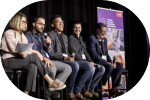

-

- 
Who am I?
I am a front-end developer from Toronto who originally
pursued a process engineering career in the power industry.
Early on, I took a process-centric approach to solving
problems. Leveraging the Lean Six Sigma methodology, I was
able to build automated systems that helped my teammates
perform their jobs more efficiently. As I continued to build
more complex projects, however, I would continuously ask
myself “How can I make things better for the user?”
In search of an answer, I studied user experience design
which gave me a user-centric approach to solving problems
and helped me gather data to ensure that my projects were
equally as effective as they were efficient.
By marrying both approaches, I was able to use everything
that I had learned throughout my 5 year career into one
ambitious project, a training website that helps manage the
development of junior engineers through an instructor-led
curriculum.
This project gave me the confidence to attend Juno College
of Technology and transition into a career as a developer.
Interests
Outside of work, I am a:
- Basketball fan - Let's go Raptors!
- Diversity and inclusion advocate
- Music festival enjoyer
Recent Projects

Hacker News Sentiment Analyzer
HTML | CSS | SCSS | JS | APIs
An app that fetches news articles from the Hacker News API and analyzes the top comment to determine reader sentiment via the Meaning Cloud API.
Demo View Source
Planted Invitation
HTML | CSS | SCSS
A pixel-perfect replica of a photoshop design provided by the instructors at Juno College that is built to be semantically accessible and responsive.
Demo View SourceMy Journey

How #100DaysOfCode led to a change...
In this Medium article, I break down my journey from process engineering into web development and share how learning a little bit every day made this possible.
View Article
Reaching #800DaysOfCode milestone
Every day, I document my technical learnings and I share tutorials, resources, and podcasts that have helped to shape my self-directed programming development plan.
View Thread